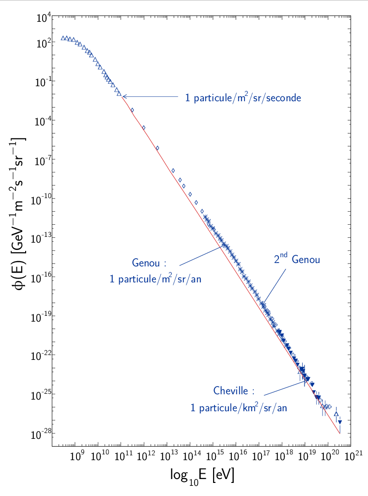
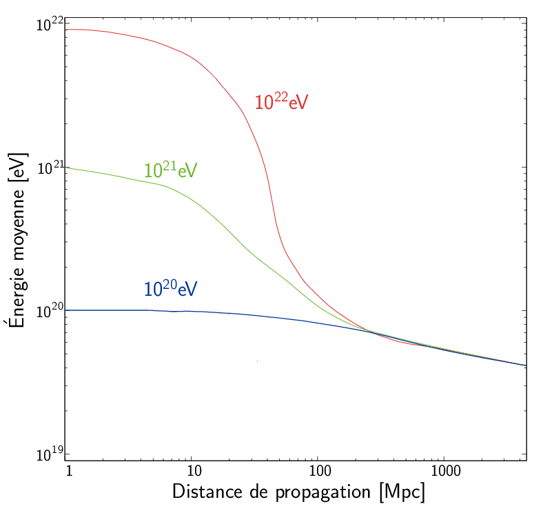
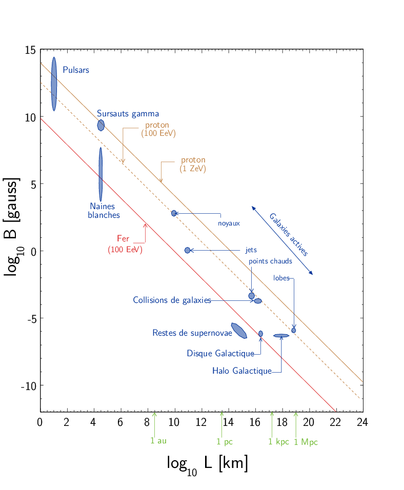
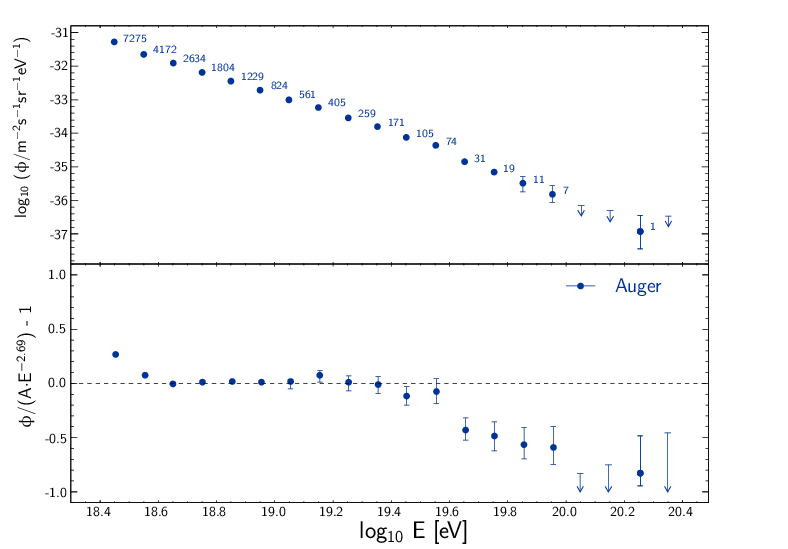
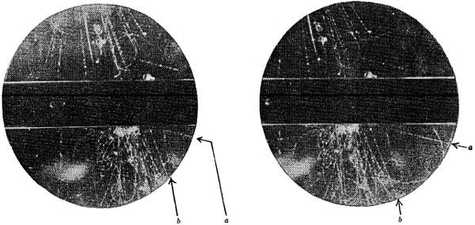

TD2 : Nombres Quantiques & Symétries
1 Énergie maximum des rayons cosmiques

Figure 1: Spectre en énergie des rayons cosmiques
\[p + \gamma \rightarrow p + \pi^{+}\] \[p + \gamma \rightarrow n + \pi^{0}\]
Calcul de l'invariant relativiste :
\begin{align*} I(\text{sortie}) &= (m_{p}c^{2} + m_{\pi}c^{2})^{2}\\ I(\text{entrée}) &= (E_{p} + E_{\gamma})^{2} - (\vv{p}_{p} + \vv{p}_{\gamma})^{2}c^{2} \end{align*}Proton ultra-relativiste \(E_{p}\sim T_{p} = p_{p}c\)
\begin{align*} I(\text{entrée}) &= E_{p}^{2} + E_{\gamma}^{2} + 2E_{p}E_{\gamma} - E_{\gamma}^{2} - E_{p}^{2} - 2E_{\gamma}E_{p}\cos\theta\\ &= 2E_{p}E_{\gamma}(1 - \cos\theta) \end{align*}d'où l'énergie seuil \[E_{p} \sim T_{p} = \frac{\left(\Upsigma\,m_\text{finale}c^{2}\right)^{2}}{2E_{\gamma}(1-\cos\theta)}\]
Cas limites: \[\theta\rightarrow0; T_{p}\rightarrow\infty\] et \[\theta = 180^\circ; T_{p} = \frac{\left(\Upsigma\,m_\text{finale}c^{2}\right)^{2}}{4E_{\gamma}}\]
AN: \(m_{\pi^{0}}c^{2}\) = 135 MeV et \(m_{\pi^{+}}c^{2}\) = 139.6 MeV
\begin{align*} T_{p}(\pi^{0}/\pi^{+}) &= \frac{(135/139.6 + 938.3)^{2}\cdot1.6\,10^{-13}}{4\cdot3\cdot1.38\,10^{-23}\cdot2.7} = 4.1\,10^{20}\,eV\\ \end{align*}
Figure 2: Énergie moyenne des protons en fonction de leur distance à la source
Discussion : Les pertes énergétiques résultantes de la photoproduction de pions sont de l’ordre de 15% par interaction ; le libre parcours moyen λ est typiquement le mégaparsec1. Ainsi, l’énergie moyenne d’un proton diminue de façon significative au cours de sa propagation dans l’Univers comme le montre la Figure 2. Un proton avec une énergie initiale de 1022 eV voit son énergie réduite à 1020 eV après avoir parcouru 100 Mpc. Une diminution nette du flux appelée coupure GZK est alors attendue au seuil de la réaction de photoproduction de pions i.e. 1019.6 eV2. La position exacte de cette coupure GZK peut varier sensiblement suivant que les sources considérées sont ou non uniformément réparties dans l’Univers. En particulier, la forme du spectre au delà du seuil GZK permet, en théorie, d’évaluer la répartition des sources et de mettre en exergue une éventuelle surabondance locale.
dans l’hypothèse où les RCUHEs sont des noyaux, la photodésintégration par interaction avec les photons du CMB et le fond infrarouge, devient importante dans la région 5 1019 – 2 1020 eV. La longueur de perte d’énergie, i.e. le rapport entre le libre parcours moyen et l’inélasticité de la réaction, est typiquement de 100 Mpc pour un noyau de fer de 100 EeV. Le rayonnement gamma est quant à lui fortement attenué en raison, principalement, des interactions avec le fond radio \(\gamma + \gamma_{radio} \rightarrow e^{+} + e^{-}\).

Figure 3: Diagramme de Hillas de différents objets compacts. Les axes correspondent respectivement au logarithme décimal du champ magnétique et à la taille caractéristique de l'objet.

Figure 4: Spectre du rayonnement cosmique mesuré par l'Observatoire Pierre Auger (données 2008)
2 Étrangeté dans les rayons cosmiques
Cascade de réactions : \(p\rightarrow\pi\rightarrow\mu\rightarrow e\) Le muon est ainsi détecté pour la première fois car si sa durée de vie propre est de 2.2 μs, ce temps est "boosté" par le facteur de Lorentz soit τ = γτ0 = quelques ms.

Figure 5: Photographies de deux événements faisant apparaître la désintégration de deux particules \(\bm{V}\) (référence Rochester G. D. & Butler C. C. 1947)
- Les particules \(V\)
\(V_{1}\rightarrow p + \pi^- \quad V_{2}\rightarrow \pi^+ + \pi^-\)
Conservation de l'énergie et de l'impulsion
\begin{equation*} \begin{bmatrix} E_{V_1}\\\vv{p_{V_1}} \end{bmatrix} = \begin{bmatrix} E_\pi\\\vv{p_\pi} \end{bmatrix} + \begin{bmatrix} E_p\\\vv{p_p} \end{bmatrix} \end{equation*}\[E_{V_1} = E_\pi + E_p \Leftrightarrow p_{V}^2c^2 + m_{V}^2c^4 = \left[\sqrt{p_\pi^2c^2 + m_\pi^2c^4} + \sqrt{p_p^2c^2 + m_p^2c^4}\right]^2\] \[\vv{p_{V}} = \vv{p_\pi} + \vv{p_p} \Leftrightarrow p_{V}^2c^2 = p_\pi^2c^2 + p_p^2c^2 + 2p_\pi p_p c^2\cos\theta\]
AN :
\begin{align*} p_{V_1}c &= \sqrt{160^2 + 320^2 + 2\cdot160\cdot320\cos 65} = \unit[413]{MeV}\\ p_{V_2}c &= \sqrt{220^2 + 220^2 + 2\cdot220^2\cos 135} = \unit[168]{MeV}\\ m_{V_1}c^2 &= \left[\sqrt{160^2 + 140^2} + \sqrt{320^2 + 938^2} - 413^2\right]^{1/2} = \unit[1130]{MeV}\\ m_{V_2}c^2 &= \left[4\cdot(220^2 + 140^2) - 168^2\right]^{1/2} = \unit[493]{MeV} \end{align*}Discussion : À l'époque, seuls le proton, neutron, électron, pion et muon sont connus → \(V_1 = \Lambda^0\) et \(V_2 = K^0\)
- \(d_{\Lambda^0} = \unit[3.2]{cm}\) et \(d_{K^0} = \unit[0.8]{cm}\)
\begin{align*}
T_{\Lambda^0} &= \sqrt{m_{\Lambda^0}^2c^4 + p_{\Lambda^0}^2c^2} - m_{\Lambda^0}c^2 = \unit[73]{MeV} \ll m_{\Lambda^0}c^2\\
T_{K^0} &= \sqrt{m_{K^0}^2c^4 + p_{K^0}^2c^2} - m_{K^0}c^2 = \unit[28]{MeV} \ll m_{K^0}c^2
\end{align*}
\[\tau_{\Lambda^0} = \frac{d_{\Lambda^0}}{v}\] or \(p=mv\) d'où \[\tau_{\Lambda^0} = \frac{d_{\Lambda^0}\cdot m_{\Lambda^0}}{p} = \frac{d_{\Lambda^0}}{c}\cdot \frac{m_{\Lambda^0}c^2}{pc}\]
AN :
\begin{align*} \tau_{\Lambda^0} &= \frac{\unit[0.032]{m}}{\unit[3\,10^8]{m/s}}\cdot\frac{\unit[1130]{MeV}}{\unit[413]{MeV}} = \unit[2.9\,10^{-10}]{s}\\ \tau_{K^0} &= \frac{\unit[0.008]{m}}{\unit[3\,10^8]{m/s}}\cdot\frac{\unit[493]{MeV}}{\unit[168]{MeV}} = \unit[7.8\,10^{-11}]{s} \end{align*}
- τ est un temps caractéristique d'une désintégration par interaction faible : τ > 10-13 s (cf. page 30)
- Le fait que ces particules \(K^0\) et \(\Lambda^0\) soient toujours produites par paire implique la conservation d'une quantité jusqu'alors inconnue → introduction de l'étrangeté \(S\) comme nouveau nombre quantique. Cette quantité est ainsi conservée lors de la production des particules \(V\) par interaction forte mais non-conservée lors de leurs désintégrations (par interaction faible) : \(S_{K^0}\) = +1, \(S_{\Lambda^0}\) = -1 et \(S\) est nulle pour toutes les particules connues jusqu'à présent. Il découlera de ces résultats expérimentaux le modèle des quarks introduit par Murray Gell-Mann (déjà à l'origine de l'étrangeté pour expliquer les résultats du Cosmotron3 de BNL) au début des années 60, modèle pour lequel il obtiendra le prix nobel de Physique en 1969.
- \(p + n \rightarrow p + \Lambda^0\) et \(n + n \rightarrow \Lambda^0 + \Lambda^0\). Ces deux réactions ne conservent pas l'étrangeté \(S\). Elles ne peuvent donc se produire par interaction forte. La très faible section efficace par rapport à la réaction \(p + p \rightarrow K^0 + \Lambda^0\) confirme cette hypothèse : σforte ≫ σfaible
- \(\Lambda^0 \rightarrow \pi^+ + \pi^-\) : le nombre baryonique n'est pas conservé or toutes intéractions conservent ce nombre (y compris l'interaction faible)
3 La parité et sa violation
- L'opérateur parité transforme une fonction \(\psi(\vv{r})\) en \(\psi(-\vv{r})\) : \(\hat{\mathcal{P}}\,\psi(\vv{r}) = \psi(-\vv{r})\). Les valeurs propres π sont telles que \(\hat{\mathcal{P}}\,\psi(\vv{r}) = \pi\,\psi(\vv{r})\) or \(\hat{\mathcal{P}}^2\,\psi(\vv{r}) = \hat{\mathcal{P}}\,\psi(-\vv{r}) = \psi(\vv{r})\). \(\hat{\mathcal{P}}\) est donc unitaire et les valeurs propres sont π = ±1 (à une phase près). L'invariance sous \(\hat{\mathcal{P}}\) i.e. conservation de la parité implique qu'il n'y a pas de différence entre "gauche ou droite" (même image dans un miroir).
- \(A^+\rightarrow\pi^++\pi^++\pi^+-\)
Conservation du moment cinétique total \(\vv{I}\)
3le Cosmotron du laboratoire national de Brookhaven fut le premier synchrotron a accéléré des protons au delà du GeV (1952 – 1966) contribuant à la découverte de l'ensemble des mésons chargés de même qu'à la mise en évidence de particules lourdes instables telles que les particules \(V\).
$$\vv{I}(A^+) + \vv{L}_i = \vv{I}(\pi^+) + \vv{I}(\pi^+) + \vv{I}(\pi^-) + \vv{L}_f$$
où \(\vv{L}_i\) et \(\vv{L}_f\) sont les moments angulaires relatifs des particules en voie d'entrée et de sortie. La conservation de la parité π se traduit par l'équation suivante
\[\pi(A^+)\,(-1)^{L_i} = \pi(\pi^+)\,\pi(\pi^+)\,\pi(\pi^-)\,(-1)^{L_f}\]
Du fait que \(I(A^+) = I(\pi^\pm) = 0\), on déduit que \(\vv{L_f} - \vv{L_i} = \vv{0}\) soit la parité dans l'état final \(A^+\)
$$\pi(A^+) = (-1)\,(-1)\,(-1)\,(-1)^0 = -1$$
- \(\theta^+\rightarrow\pi^++\pi^0\) avec \(I(\theta)=0\) et \(I^\pi(\pi)=0^-\). Le
moment angulaire relatif \(L_i - L_f\) est donc nul.
\[\pi(\theta^+) = \pi(\pi^+)\,\pi(\pi^0)\,(-1)^0 = +1\]
- \(A^+\) et \(\theta^+\) ont la même masse, mêmes durées de vie et même charge électrique. Elles sont donc la même particule mais avec une parité différente. Les mésons se désintégrant par interaction faible, ce problème aussi connu sous le nom de "puzzle θ/τ" (τ≡ A+) trouva sa solution dans le fait que l'interaction faible ne conserve pas la parité. Ces deux particules sont donc une seule et même particule appelée à présent \(K^+\).